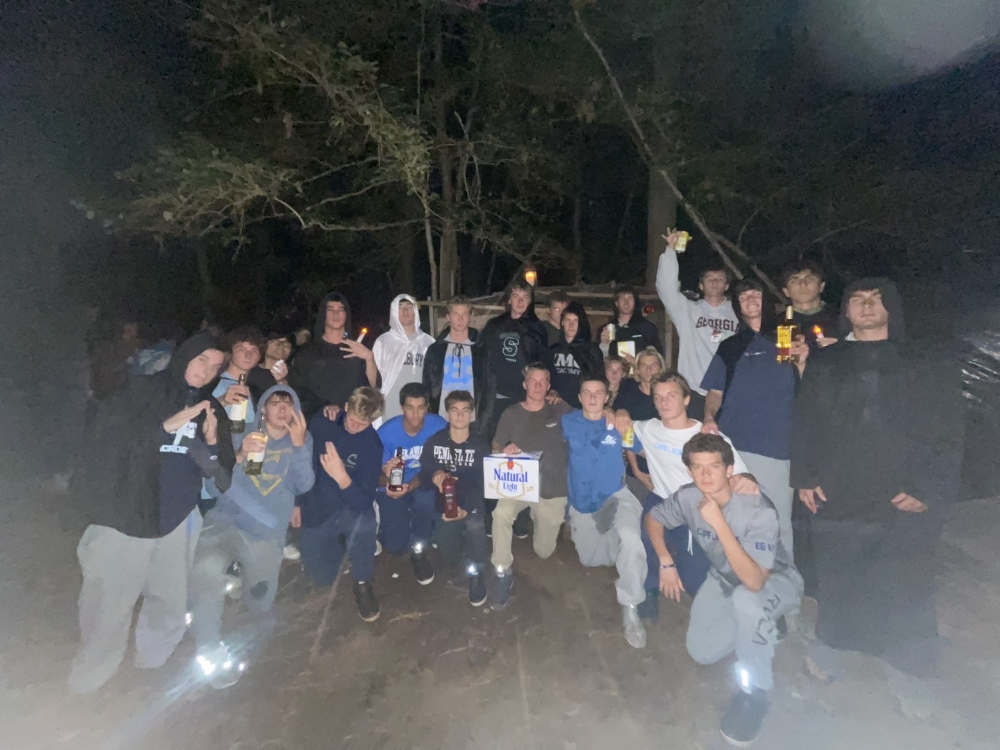
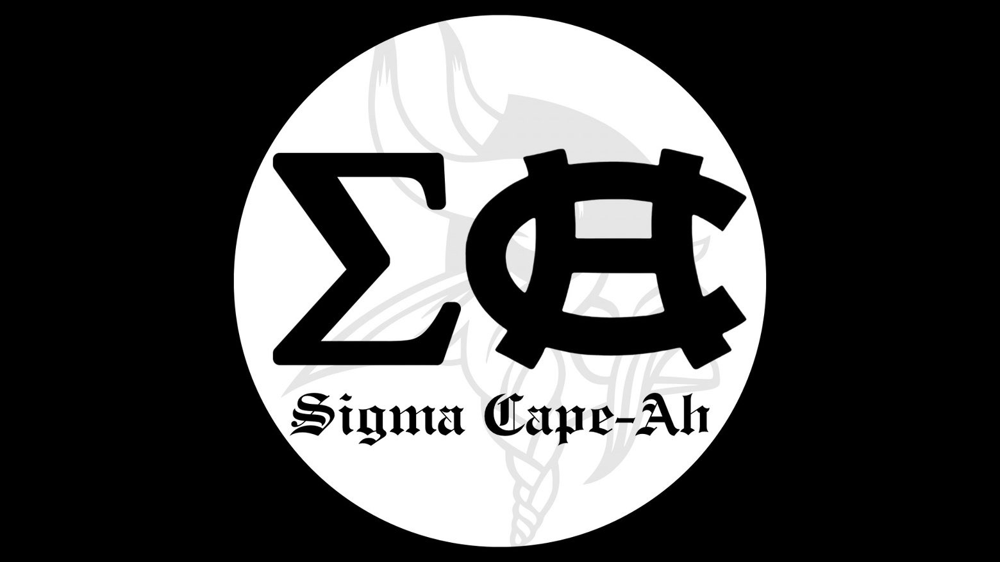

About Us
Sigma Cape-Ah is an off-campus high school fraternity built around creating a sense of community and providing an outlet for a good time. Our goal is to create a group that represents leadership, and organization beyond the school building.
Purpose
We operate with a focus on discipline, competition, and creating something that feels bigger than just a group of friends. Every member represents the name through how they act, show up, and carry themselves.

Brotherhood
Before becoming an official brother you must go through a 1 year pledging process. In order to become a pledge you must first be invited by the standing president, or suggested to the fellow brothers by a current member. The pledging process involves no hazing, but rather occasional competitions that are mandatory for a pledge to compete in. After 1 school year of being a pledge you will officially be accepted as a brother and now have the ability to run for a position in the fraternity.
